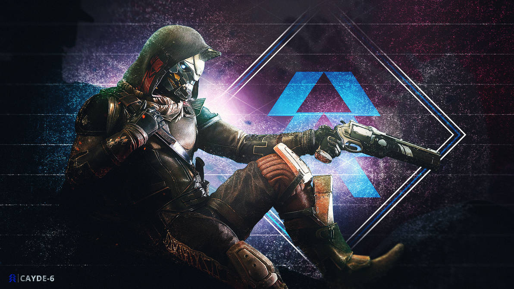

Cayde-6 foi um Exo Guardian e Vanguard para a classe Hunter que fez parceria com o Ghost Sundance. Um famoso explorador e aventureiro em sua juventude, Cayde correu com um bando de Caçadores que incluía Shiro-4 e Andal Brask, seu antecessor como Hunter Vanguard. Depois que Andal foi assassinado por Taniks, o Scarred, que se acredita que Cayde já havia matado, Cayde assumiu o posto de seu amigo na Torre, apesar de seu ódio por ficar preso na papelada e incapaz de cumprir missões.
Como Hunter Vanguard, Cayde muitas vezes olhava para o outro lado ou facilitava os Guardiões que operavam fora dos procedimentos operacionais normais. Apesar disso, ele se tornou amigo próximo de seus companheiros da Vanguarda, Comandante Zavala e Ikora Rey. Durante a Guerra dos Possuídos, ele ajudou o Guardião a se infiltrar no Encouraçado para derrotar Oryx, o Rei dos Possuídos e mais tarde lutou ao lado deles na linha de frente da Guerra Vermelha. Suas experiências na Guerra Vermelha levaram Cayde a deixar suas funções na Última Cidade frequentemente para retornar às missões de campo, levando à sua morte na Prisão dos Anciões nas mãos de Uldren Sov e dos Barões Desprezados.
